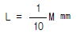
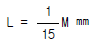
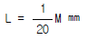
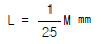
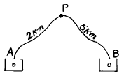
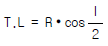
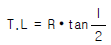
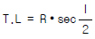
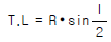

지적산업기사 (2003-08-10 기출문제)
1과목: 지적측량
1. 다음 중 지적측량의 원점에 해당되지 않는 것은?
- 남부원점
- 중부원점
- 서부원점
- 동부원점
(정답률: 알수없음)

2. 지적도근측량에서 종선오차가 0.52m이고 종선차 절대치의 합계는 640m, 측선장의 총합은 700m이며, 오차를 배분할 측선의 측선장은 42m, 종선차는 26m일 때 배각법에 의해 오차를 배분할 측선의 종선차는?
- 2cm
- 3cm
- 4cm
- 5cm
(정답률: 알수없음)
3. 다음중 지적복구측량에 해당되는 것은?
- 수재지역의 측량
- 축척변경을 하기 위하여 행하는 측량
- 지적공부 멸실 지역의 측량
- 임야를 대로 지목을 변경하기 위한 측량
(정답률: 알수없음)
4. 평판측량에 의한 두점 간의 거리 측정에서 조준의 경사분획 +25와 경사거리 60m를 구했을 때 이 두점간의 수평거리는?
- 53.67m
- 57.43m
- 58.21m
- 59.93m
(정답률: 알수없음)
5. 다음중 지적측량의 대상이 아닌 것은 어느 것인가?
- 토지의 경계를 좌표로 등록할 때
- 경계를 지표상에 복원함에 있어 측량을 필요로 할 때
- 토지를 분할하고자 할 때
- 토지를 합병하고자 할 때
(정답률: 알수없음)
6. 다음 측량방법중 도근측량에서 사용할 수 없는 것은?
- 폐합도선법
- 개방도선법
- 왕복도선법
- 결합도선법
(정답률: 92%)
7. 지적도근측량을 교회법으로 시행하는 경우에 따른 설명으로서 타당하지 않는 것은?
- 방위각법으로 시행할 때는 분위(分位)까지 독정한다.
- 시가지에서는 보통 배각법으로 실시한다.
- 지적도근점은 기준으로 하지 못한다.
- 삼각점, 지적삼각점, 지적삼각보조점 등을 기준으로 한다.
(정답률: 알수없음)
8. 배각법에 의한 지적도근측량시 1배각이 279° 16'24", 3배각이 117° 49'41"로 관측되었다. 이 때의 교차는?
- 10초
- 20초
- 30초
- 40초
(정답률: 알수없음)
9. 변수가 15변인 도선을 측판측량의 도선법으로 시행하여 폐합오차가 1.29㎜일 때 제7변에 배부할 오차조정량은?
- 0.6㎜
- 1.3㎜
- 1.5㎜
- 2.6㎜
(정답률: 알수없음)
10. 측판측량방법에 의한 세부측량을 방사법으로 하는 경우 1방향선의 도상길이는?
- 10㎝ 이하
- 20㎝ 이하
- 30㎝ 이하
- 40㎝ 이하
(정답률: 60%)
11. 측판측량방법에 의한 세부측량으로 사용할 수 없는 것은?
- 교회법
- 도선법
- 방사법
- 시거법
(정답률: 알수없음)
12. 측판측량방법에 있어서 도상(圖上)에 영향을 미치지 않는 지상거리의 축척별 한계는? (단, L : 허용범위, M : 축척분모)




(정답률: 알수없음)
13. 지적삼각측량시 두 지점의 기지점에서 소구점까지 평면거리가 각각 4712m, 3912m 일 때 두 기지점에서 소구점의 표고를 계산한 교차는 얼마 이하이어야 하는가?
- 0.48m
- 0.50m
- 0.52m
- 0.54m
(정답률: 알수없음)
14. 토지의 면적을 지적도에서 구하는 경우 도곽선의 신축량이 얼마 이상일 때 면적을 보정하는가?
- 도상 0.01mm 이상
- 도상 0.⑤mm 이상
- 도상 0.1mm 이상
- 도상 0.5mm 이상
(정답률: 알수없음)
15. 전자면적측정기에 의한 면적측정은 도상에서 몇 회 측정하여야 하는가?
- 1회
- 2회
- 3회
- 5회
(정답률: 알수없음)
16. 배각법에 의해 도근측량을 실시하여 종선차의 합이-140.10m이고 종선차의 기지값은 -140.30m, 횡선차의 합은 320.20m, 횡선차의 기지값은 320.25m일 때 연결오차는 얼마인가?
- 0.21m
- 0.30m
- 0.25m
- 0.31m
(정답률: 알수없음)
17. 도선법에 의하여 지적도근측량을 하였다. 부득이한 경우 1도선 점의 수를 최대 몇 점까지 할 수 있는가?
- 20점
- 30점
- 40점
- 50점
(정답률: 알수없음)
18. 축척 1/600 인 지적도 시행지역에서 일람도를 작성할 때 일반적인 축척은?
- 1/600
- 1/1200
- 1/3000
- 1/6000
(정답률: 알수없음)
19. 다음은 지적측량기준점의 제도방법이다. 틀린 것은?
- 1등 및 2등삼각점은 직경 1㎜, 2㎜, 3㎜의 3중원으로 제도한다.
- 3등 및 4등삼각점은 직경 1㎜, 2㎜의 2중원으로 제도한다.
- 지적삼각점 및 지적삼각보조점은 직경 3㎜의 원으로 제도한다.
- 지적도근점 및 도근보조점은 직경 1㎜의 원으로 제도한다.
(정답률: 알수없음)
20. 지적도 정리에서 행정구역선이 겹치는 경우에는 어떻게 처리하는가?
- 시 또는 군 행정구역선만 제도한다.
- 최상급 행정구역선만 제도한다.
- 최하급 행정구역선만 제도한다.
- 적당한 위치에 제도할 수 있다.
(정답률: 알수없음)
2과목: 응용측량
21. 노선 측량에서 접선 길이가 50ｍ, 교각이 40° 일 때 원곡선의 곡선 길이는?
- 89.88ｍ
- 92.88ｍ
- 94.88ｍ
- 95.88ｍ
(정답률: 알수없음)
22. 감도가 30초인 레벨의 기포관 곡률반경은 얼마인가?(단, 기포관 1눈금 간격은 2㎜이다.)
- 10.313m
- 13.751m
- 15.325m
- 17.263m
(정답률: 알수없음)
23. 다음 그림에서 A,B 두개의 수준점으로부터 수준 측량을 하여 P점의 표고를 구한 값중 옳은 것은?(단, A → P : 31.363m, B → P : 31.375m 이다.)

- 31.366m
- 32.366m
- 33.366m
- 34.366m
(정답률: 알수없음)
24. 단곡선을 설치하고자 할 때 접선장(T.L)을 구하는 식은?




(정답률: 알수없음)
25. 완화 곡선의 접선은 시점에서는 ( A )에 종점에서는 ( B )에 접한다. (A, B)에 들어갈 알맞는 말은?
- (곡선, 직선)
- (직선, 곡선)
- (직선, 원호)
- (곡선, 원호)
(정답률: 알수없음)
26. 다음은 지형도 작성 순서를 나열한 것이다. 순서가 가장 옳은 것은?
- 답사 - 골조측량 - 세부측량 - 지형도 제작
- 답사 - 세부측량 - 골조측량 - 지형도 제작
- 골조측량 - 답사 - 세부측량 - 지형도 제작
- 세부측량 - 골조측량 - 답사 - 지형도 제작
(정답률: 알수없음)
27. 사진크기가 23cm x 23cm, 사진축척이 1/5000이고 중복도가 60%일 때 촬영기선의 길이는 얼마인가?
- 230m
- 460m
- 800m
- 1150m
(정답률: 알수없음)
28. 축척 1/25000 지형도에 등재하는 등고선 중 조곡선의 간격은?
- 20m
- 10m
- 5m
- 2.5m
(정답률: 알수없음)
29. 다음 중 수준측량에서 기계고 산출식으로 옳은 것은?(단, I.H:기계고, G.H:표고, F.S:전시, B.S:후시)
- I.H = G.H - F.S
- I.H = G.H + F.S - B.S
- I.H = G.H + B.S
- I.H = G.H - B.S
(정답률: 알수없음)
30. 곡선설치를 할 때 교점의 추가거리가 140.21㎞이고 접선 길이가 230.5m면 곡선 시점의 거리는?
- 139979.5m
- 137879.5m
- 147879.5m
- 14826.5m
(정답률: 알수없음)
31. 곡선의 설계 과정에서 완화곡선을 넣을 장소로 알맞는 것은?
- 원곡선과 직선사이
- 원곡선과 반향곡선 사이
- 반직선과 반향곡선 사이
- 원곡선과 배향곡선 사이
(정답률: 알수없음)
32. 지형도에서 등고선이 이 지점에서는 쌍곡선을 이룬다. 이 지점을 무엇이라 부르는가?
- 안부
- 구릉
- 산능
- 평야
(정답률: 알수없음)
33. 영구적인 양수표를 설치하는 위치로 부적당한 곳은?
- 홍수시 이동 또는 파손의 염려가 없는 곳
- 잔류 및 역류가 없는 곳
- 유량관측소 부근
- 수류의 방향에 변화가 있는 곳
(정답률: 알수없음)
34. 측점 Ａ의 횡단면적이 32m2, 측점 Ｂ의 횡단면적이 48m2로 계산되었다. 두 측점간 거리가 20ｍ일 때 토공량을 계산한 것으로 맞는 것은?
- 300m3
- 600m3
- 800m3
- 1000m3
(정답률: 알수없음)
35. 지적측량에 이용되는 항공사진은 주로 수직사진을 쓰는데 카메라의 광축을 무엇과 일치시켜 촬영하는가?
- 연직축
- 수평축
- 평반축
- 평행축
(정답률: 알수없음)
36. 다음중 사진촬영용 항공기가 구비해야 할 조건으로서 적합치 못한 것은?
- 시계가 좋을 것
- 이륙거리가 짧을 것
- 상승한계가 낮을 것
- 항속거리가 길 것
(정답률: 알수없음)
37. 다음중 항공사진측량의 장점으로 볼수 없는 것은?
- 정성적인 측정이 가능하다.
- 좁은 지역의 측량일수록 경제적이다.
- 분업화에 의한 능률적 작업이 가능하다.
- 움직이는 물체의 상태를 분석할 수 있다.
(정답률: 알수없음)
38. 터널측량에 대한 설명으로 틀린 사항은?
- 터널의 방향은 트래버스측량 방법으로 정할 수 있다.
- 갱내의 수준측량은 주로 레벨과 표척에 의한다.
- 특수형태의 트랜싯과 조명장치가 필요하다.
- 지상, 지하, 갱내외 연결측량으로 구분할 수 있다.
(정답률: 알수없음)
39. 비행고도 3000m 상공에서 초점거리 150㎜의 사진기로 촬영한 수직항공사진에서 20m 길이의 교량은 얼마로 나타나는가?
- 1.0㎜
- 1.5㎜
- 2.0㎜
- 3.0㎜
(정답률: 알수없음)
40. 터널을 뚫기 위하여 트래버스 측량을 실시한 결과 위거 총 합계가 +42.72m, 경거 총합계가 -35.80m 이었다. 두 점 사이의 방위각은?
- 39° 57′ 49″
- 140° 02′ 11″
- 219° 57′ 49″
- 320° 02′ 11″
(정답률: 알수없음)
3과목: 토지정보체계론
41. 다음 중 도시의 유기적인 구성요소와 거리가 먼 것은?
- 인구
- 권리
- 시설
- 활동
(정답률: 알수없음)
42. 도시기본계획의 타당성 여부에 관한 검토주기는?
- 20년
- 10년
- 5년
- 3년
(정답률: 알수없음)
43. 토지 이용의 수요예측방법 중 정량적인 면적 기준을 설정하기 어려워 지형, 지세적 조건을 감안하여 계획목적에 따라 결정하는 지역은?
- 주거지역
- 상업지역
- 공업지역
- 녹지지역
(정답률: 알수없음)
44. 공공시설의 정비없이 시가지가 무질서하게 확산되는 현상을 일컫는 용어는 무엇인가?
- 어번 스프롤(urban sprawl)
- 슬럼(slum)
- 도시 연담화(conurbation)
- 불량지구(squatter)
(정답률: 알수없음)
45. 총인구 밀도를 100인/ha이라 하고 주거지역 전체 면적을 50ha, 주택용지 면적을 20ha이라고 할 때 순인구밀도는?
- 120인/ha
- 250인/ha
- 150인/ha
- 210인/ha
(정답률: 알수없음)
46. 다음 중 토지이용계획의 기본 목표인 공공이익의 요소로 볼 수 없는 것은?
- 복합성
- 보건성
- 안전성
- 경제성
(정답률: 30%)
47. 다음 중 도시화에 대한 설명으로 옳지 않은 것은?
- 도시화는 경제적 동기뿐만 아니라, 사회심리적요인에 의해서도 발생한다.
- 도시화는 집적의 순이익이 최대가 될 때까지 집중적 도시화가 발생한다.
- 도시화의 과정에서 집적의 불이익이 집적의 이익보다 커지게 되면 분산적 도시화가 발생한다.
- 농촌에서 도시로 인구가 이동하는 요인은 도시의 흡인요인과 농촌의 압출요인이 상호작용하여 발생한다.
(정답률: 알수없음)
48. 시장 또는 군수가 도시관리계획에 관한 지형도면을 작성하여 도지사의 승인을 신청할 때의 도면축척으로 옳은 것은?
- 1/500-1/600
- 1/500-1/1500
- 1/600-1/1700
- 1/1000-1/2000
(정답률: 알수없음)
49. 환지계획에 따라 사업시행 전 각 토지와 토지상에 존재하던 권리를 사업시행 후의 환지에 위치와 면적을 확보하는 것은?
- 환지청산
- 환지예정지의 지정
- 환지설계
- 환지처분
(정답률: 알수없음)
50. 허드슨의 계획이론 분류에 포함되지 않는 것은?
- 점진적 계획
- 경험적 계획
- 옹호적 계획
- 교류적 계획
(정답률: 알수없음)
51. 공업지역의 입지조건으로 바람직하지 못한 곳은?
- 경사도 5%이내의 평탄지
- 고속도로와의 연계가 용이한 곳
- 유통상업과의 연계가 용이한 곳
- 장래 시가화 구역
(정답률: 알수없음)
52. 다음중 하워드(E.Howard)가 제시한 전원도시의 조건이라고 할 수 없는 것은?
- 토지를 영구히 공유로 한다.
- 상하수도, 가스, 전기는 모도시의 것을 사용한다.
- 도시 주위에 넓은 농업지대를 가져야 한다.
- 시민경제 유지에 족할만한 공업을 유치한다.
(정답률: 알수없음)
53. 환지를 지정하거나 그 대상에서 제외한 경우, 그 과부족 분에 대하여 금전으로 청산할 때 고려하지 않아도 되는 것은?
- 종전 토지의 면적
- 종전 토지의 소유자
- 종전 토지의 위치와 환지의 위치
- 종전 토지의 환경
(정답률: 알수없음)
54. 도시는『주민의 대부분이 공업적 또는 상업적인 영리수입에 의해 생활하고 정주하는 곳』이라고 정의한 사람은?
- 코퍼(Cowper)
- 웨버(M. Weber)
- 멈포드(L. Mumford)
- 워쓰(L. Wirth)
(정답률: 알수없음)
55. 다음 중 우리 나라의 도시기본계획을 수립할 수 없는 자는?
- 특별시장
- 도지사
- 광역시장
- 군수
(정답률: 알수없음)
56. 도시조사의 기초가 되는 대표적 전수조사자료의 조사주기가 틀린 것은?
- 인구주택 총 조사 - 5년
- 산업 총 조사 - 5년
- 총 사업체 통계조사 - 5년
- 광공업 통계조사 - 5년
(정답률: 알수없음)
57. 다음중 국토의계획및이용에관한법률에 규정된 기반시설이 아닌 것은?
- 도로
- 하천
- 유원지
- 광천지
(정답률: 알수없음)
58. 도시의 특징이 아닌 것은?
- 1차산업보다 2,3차 산업의 구성비율이 높다.
- 일정지역에 정주인구가 집중하여 인구밀도가 높다.
- 분화된 기능이 넓게 분산되어 있다.
- 이질성, 익명성, 개성화를 보이고 있다.
(정답률: 알수없음)
59. 개발방식에 의한 도시재개발의 유형이 아닌 것은?
- 복합재개발
- 철거재개발
- 보전재개발
- 수복재개발
(정답률: 알수없음)
60. 도시의 인구추정방법이라 할 수 없는 것은?
- 출산율에 의한 방법
- 인구증가율에 의한 방법
- 최소 자승법에 의한 방법
- 시가화 가능 면적과 표준 인구밀도에 의한 방법
(정답률: 알수없음)
4과목: 지적학
61. 경계점좌표등록부에 등재되는 좌표는?
- 구면직각 좌표
- 경위도 좌표
- 평면직각 좌표
- UTM 좌표
(정답률: 알수없음)
62. 다음 토지이동 중 지번의 결번 원인이 될수 있는 것은?
- 신규등록
- 등록전환
- 토지분할
- 지목변경
(정답률: 알수없음)
63. 도해지적(圖解地籍)의 단점이 아닌 것은?
- 축척의 크기에 따라 허용오차가 다르다.
- 도면의 신축방지와 보관관리가 어렵다.
- 작업상 인위적, 기계적, 자연적 오차가 유발되기 쉽다.
- 지적측량결과를 지상에 복원할 때에는 본래의 측량 당시의 정확도로 다시 재현할 수 있다.
(정답률: 알수없음)
64. 3차원 지적에 해당되지 않는 것은?
- 평면지적
- 입체지적
- 지표공간
- 지중공간
(정답률: 알수없음)
65. 징발된 토지의 소유권은 누구에게 있는가?
- 국가
- 국방부
- 지방자치단체
- 토지소유자
(정답률: 알수없음)
66. 현행 토지대장과 같은 조선시대 양안(量案)의 역할이 아닌 것은?
- 토지의 실태파악
- 세금 징수대장
- 소유권 입증(立證)
- 가옥유무 확인
(정답률: 알수없음)
67. 면적에 대한 설명 중 옳지 않은 것은?
- 토지의 한정된 구역(경계)안의 수평면상의 넓이를 말한다.
- 토지의 한정된 구역(경계)안의 경사면상의 넓이를 말한다.
- 토지의 면적은 지적측량에 의하여 결정하는 것이 원칙이다.
- 토지의 면적을 과거에는 지적(地積)이라고 했다.
(정답률: 70%)
68. 다음 중 토지등록부의 편성방법 중 연대적 편성주의에 대한 설명으로 옳은 것은?
- 개개의 토지를 중심으로 하여 등록부를 편성하는 방식이다.
- 개개의 토지소유자를 중심으로 하여 편성하는 방식이다.
- 당사자의 신청순서에 따라 순차적으로 기록하는 방식이다.
- 물적편성주의를 기본으로 하여 인적편성주의 요소를 가미한 방식이다.
(정답률: 알수없음)
69. 토지 조사령에 의한 세부 측도에서 가장 많이 쓰인 지적측량기준점은?
- 대삼각점
- 소삼각점
- 지적보조삼각점
- 지적도근점
(정답률: 알수없음)
70. 다음 지적제도 중에서 토지정보시스템과 밀접한 관계가 있는 것은?
- 세지적
- 경제지적
- 법지적
- 다목적지적
(정답률: 알수없음)
71. 조선토지조사사업 당시 조사측량기관은?
- 임시토지조사국
- 부와 면
- 도지사
- 산림과
(정답률: 알수없음)
72. 우리나라에서 현재 채택하고 있는 지목의 유형은?
- 지형지목
- 토성지목
- 용도지목
- 복식지목
(정답률: 알수없음)
73. 대나무가 집단으로 자생하는 부지의 지목은 다음 어느 것으로 설정해야 하는가?
- 임야
- 공원
- 잡종지
- 유원지
(정답률: 알수없음)
74. 다음 중 새로이 지적측량을 할 필요가 없는 것은?
- 합병
- 분할
- 신규등록
- 축척변경
(정답률: 알수없음)
75. 지적도의 축척이 1200분지1 지역에서 원면적 2,020m2의 토지를 분할하여 측정면적 860m2와 1155m2를 얻었다. 분할후 산출면적은 각각 얼마인가?
- 860m2, 1160m2
- 861m2, 1159m2
- 862m2, 1158m2
- 863m2, 1157m2
(정답률: 알수없음)
76. 1필지(一筆地)의 성립요건에 해당하지 않는 것은?
- 소유자가 같을 것
- 지반이 연속될 것
- 등기가 다를 것
- 지목이 동일할 것
(정답률: 알수없음)
77. 지적공부 등록사항 중 부동산 등기부의 등기(登記)사항이 아닌 것은?
- 토지소재
- 지번
- 지목
- 좌표
(정답률: 70%)
78. 토지조사사업시에 소유자를 사정(査定)하여 토지대장에 등록한 소유권의 취득 효력은?
- 원시 취득
- 소유권 보존
- 소유권 이전
- 소유권 회복
(정답률: 알수없음)
79. 우리나라 지적제도의 원칙과 관계가 먼 것은?
- 적극적등록주의
- 인적편성주의
- 공시의 원칙
- 실질적 심사주의
(정답률: 알수없음)
80. 지적업무의 기본이 되는 지적공부에 포함되지 않는 서류는?
- 경계점좌표등록부
- 토지대장
- 가옥대장
- 임야도
(정답률: 알수없음)
5과목: 지적관계
81. 임야대장의 등록사항 표시로 틀린 것은?
- 지번 - 124
- 지목 - 목장용지
- 면적 - 1제곱미터
- 소유자 - 홍길동
(정답률: 알수없음)
82. 향교 부지의 지목은 어느 것인가?
- 사사지
- 사적지
- 종교용지
- 대
(정답률: 알수없음)
83. 신규등록신청은 어떤 경우에 하는가?
- 새로이 지적공부에 등록할 토지가 생겼을 때
- 임야를 개간하여 농경지로 만들 때
- 임야의 지목이 다른 지목으로 변경되었을 때
- 축척을 변경하여 대축척으로 변경될 때
(정답률: 알수없음)
84. 지적도에 등록된 경계점의 정밀도를 높이기 위하여 실시하는 지적업무는?
- 경계복원
- 축척변경
- 신규등록
- 지목변경
(정답률: 알수없음)
85. 등기부에서 지적의 토지표시사항이 등재되는 곳은?
- 표제부
- 갑구
- 을구
- 등재되지 않는다
(정답률: 알수없음)
86. 선매제도에 관한 다음 기술 중 틀린 것은?
- 선매의 대상은 토지소유권뿐이다.
- 선매는 토지거래계약 허가구역에서 허가신청이 있는 토지에 대하여 행하여지며 협의매수방식에 의한다.
- 토지거래계약 허가신청이 있는 날로부터 1월 이내에 선매자를 지정하여 토지소유자에게 이를 통지하여야 한다.
- 선매가격은 공시지가를 기준으로 하되, 토지거래계약 허가신청서에 기재된 가격이 공시지가보다 낮은 경우에는 공시지가로 한다.
(정답률: 알수없음)
87. 민법상 상대방있는 의사표시가 효력을 발생하는 시기는?
- 표의자가 의사를 외부로 표명하였을 때
- 표의자가 의사표시를 상대방에게 발신하였을 때
- 의사표시가 상대방에게 도달하였을 때
- 상대방이 의사표시의 내용을 확실히 알게 되었을 때
(정답률: 알수없음)
88. 지적정리를 한 후 토지소유자에게 그 사실을 통지하지 않아도 되는 경우는?
- 소관청이 직권으로 등록사항의 정정을 하였을 때
- 소관청이 행정구역 변경으로 지번을 변경하였을 때
- 멸실된 지적공부를 복구하였을 때
- 신규등록하는 토지의 소유자를 소관청이 조사하여 등록하였을 때
(정답률: 알수없음)
89. 국토의계획및이용에관한법률에 규정되어 있는 용도지역이 아닌 것은?
- 도시지역
- 농림지역
- 자연환경보전지역
- 개발제한지역
(정답률: 알수없음)
90. 환지처분의 공고가 있은 경우의 등기 절차로서 옳은 것은?
- 토지 소유자의 신청에 의한 등기
- 건설교통부장관의 촉탁에 의한 등기
- 행정자치부장관의 촉탁에 의한 등기
- 사업시행자의 신청, 촉탁에 의한 등기
(정답률: 알수없음)
91. 축척변경 시행공고시 기재해야할 사항이 아닌 것은?
- 축척변경의 변경절차 및 면적결정방법
- 축척변경의 시행에 따른 청산방법
- 축척변경의 시행에 관한 세부계획
- 축척변경의 목적· 시행지역 및 시행기간
(정답률: 알수없음)
92. 민법상 유치권에 대한 내용 중 옳지 않는 것은?
- 유치권은 유가증권과 같은 동산에만 성립된다.
- 점유가 불법행위로 인한 경우에는 유치권은 성립되지 않는다.
- 유치권자는 채권전부를 변제 받을 때까지 유치물 전부에 대하여 유치권을 행사할 수 있다.
- 유치권자는 채권의 변제를 받기 위하여 유치물을 경매할 수 있다.
(정답률: 알수없음)
93. 도시기본계획에서 보장하고 있는 도시행정의 민주화를 위한 가장 기초적인 절차는?
- 건설교통부장관의 승인
- 지방도시계획위원회의 심의
- 주민참여 공청회의 보장
- 권리구제 제도의 보장
(정답률: 알수없음)
94. 용도지역에서의 건축물 대지면적의 최소한도에 관한 기준중 옳지 않은 것은?
- 주거지역 : 60m2이상
- 상업지역 : 150m2이상
- 공업지역 : 150m2이상
- 녹지지역 : 150m2이상
(정답률: 알수없음)
95. 지적공부에 신규등록할 경우 토지소유자의 결정은?
- 등기부초본이나 확정판결에 의한다.
- 현재 점유하고 있는 자의 소유로 한다.
- 소관청이 조사하여 등록한다.
- 국가의 소유로 한다.
(정답률: 알수없음)
96. 영구적인 건축물의 부지중 "대"로 지목을 설정할 수 있는 건축물은?
- 변전소
- 납골당
- 박물관
- 주차시설
(정답률: 알수없음)
97. 토지소유권의 보존 또는 이전시 등기를 한 경우 등기관은 얼마내에 지적공부소관청에 통지하는가?
- 등기완료한 날부터 5일 이내
- 등기완료한 날부터 7일 이내
- 등기완료한 날부터 10일 이내
- 등기완료한 날부터 15일 이내
(정답률: 알수없음)
98. 토지의 분할을 신청할 수 있는 경우에 대한 설명으로 틀린 것은?
- 토지이용상 불합리한 지상경계를 시정하기 위한 경우
- 1필지의 일부가 용도가 다르게 된 경우
- 토지소유자가 매매를 위하여 필요로 하는 경우
- 토지의 소유자가 변경된 경우
(정답률: 알수없음)
99. 중앙 지적위원회에 관한 설명중 틀린 것은?
- 행정자치부에 중앙지적위원회를 둔다.
- 위원장 1인, 부위원장 1인과 5인 이상 10인 이내의 위원으로 구성한다.
- 지적기술자의 양성방안에 관한 사항을 심의· 의결 한다.
- 토지등록업무의 개선 및 지적측량기술의 연구· 개발에 관한 사항을 심의· 의결한다.
(정답률: 알수없음)
100. 지적 공부에 기재된 등록사항의 정정으로 토지의 경계가 변경되는 경우 그 정정은 무엇에 의해야 하는가?
- 등기부등본
- 측량성과도 및 지적도
- 소관청 직권
- 인접토지소유자의 승낙서 또는 확정판결서의 정본
(정답률: 알수없음)